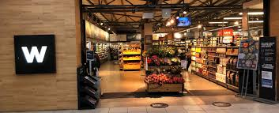
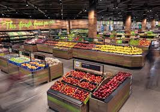

WOOLWORTHS
Woolworths (officially Woolworths Holdings Limited, and commonly referred to as Woolies) is a South African multinational retail company, headquartered in Cape Town. Founded in Cape Town, in 1931, the company owns the South African luxury department and grocery store chain, Woolworths, the Australian retailer Country Road, and pet store chain Absolute Pets. The group employs around 34,000 people.
The South African division of Woolworths comprises luxury goods retail, including fashion, homeware, and beauty products. Standalone food stores, and “Food Stops” attached to Engen gas stations, are located in metropolitan areas across South Africa
WHERE WILL YOU FIND THIS STORE?
2ND Floor WEST